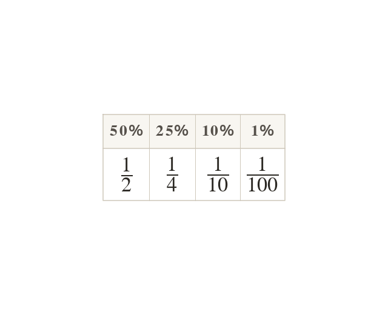

Per hundred
Per cent means per hundred: a percentage is a fraction out of
is a half, a quarter, a tenth, a hundredth.
Per cent means per hundred, so a percentage is a fraction out of
is a half, a quarter, a tenth and a hundredth.
is a half, a quarter, a tenth and a hundredth.